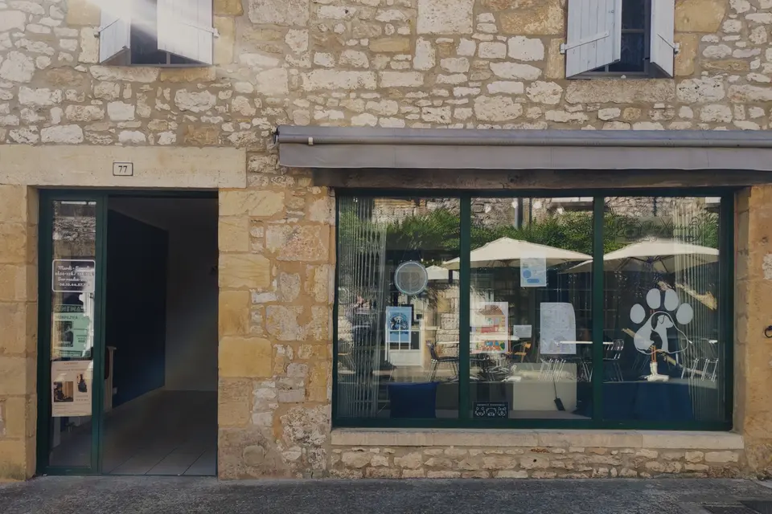
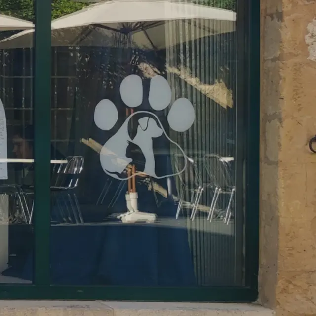

Rue Saint-Jacques · bastide de Monpazier
Toilettage chien, chat et NAC à Monpazier
Un salon chaleureux derrière une façade en pierre blonde. Bain, coupe aux ciseaux, tonte et petits soins avec des shampoings français tout doux : votre compagnon repart propre, léger et bien dans son poil.
Du mardi au samedi, sur rendez-vous
- Chiens · chats · NACtoutes tailles
- Shampoings françaisdoux pour la peau
- Accès PMRparking à deux pas


Le salon
Un atelier au calme, au cœur de la bastide
Installé dans une maison de pierre de la rue Saint-Jacques, à quelques pas de la place des Cornières, L'atelier du poil accueille chiens, chats et NAC dans un espace chaleureux et professionnel. Maeva prend le temps de faire connaissance avec chaque animal et adapte le soin à son pelage comme à son caractère.
- Shampoings françaisDoux pour la peau et choisis pour chaque type de poil.
- Ciseaux, tonte ou épilationLa coupe qui respecte la race et le confort de votre compagnon.
- Massage et conseilsUn moment de détente, et des astuces pour l'entretien à la maison.
- Accessible à tousSalon de plain-pied, accès PMR, stationnement à proximité.
Soins & tarifs
À chaque pelage son soin
Prix de départ, à titre indicatif. Le tarif final dépend de la race, de la longueur et de l'état du poil ; il vous est confirmé au téléphone.
| Prestation | Petitmoins de 10 kg | Moyen10 à 25 kg | Grandplus de 25 kg |
|---|---|---|---|
| Bain & brushingshampoing, séchage, brossage, oreilles, griffes | dès 30 € | dès 40 € | dès 55 € |
| Toilettage completbain, coupe aux ciseaux ou tonte, finitions | dès 45 € | dès 55 € | dès 70 € |
| Épilationpour les poils durs (terriers, griffons…) | dès 50 € | dès 60 € | dès 75 € |
- Bain & brossageshampoing doux, séchage, démêlage, griffesdès 45 €
- Tontepour les poils longs très emmêlés ou en étédès 60 €
- Démêlage seulbrossage et retrait des nœuds, sans baindès 30 €
- Brossage & démêlagelapins, cochons d'Inde à poil long…dès 20 €
- Coupe des griffesen douceur, sur la table ou dans les brasdès 8 €
- Petite tonte d'hygiènearrière-train, pattesdès 15 €
- Coupe des griffeschien ou chat, sans rendez-vous longdès 8 €
- Nettoyage oreilles & yeuxdès 5 €
- Démêlageen supplément, par quart d'heure10 €
- Massage relaxanten fin de soindès 5 €
Votre compagnon est très emmêlé, anxieux ou âgé ? Dites-le au moment de réserver : on prévoit le temps qu'il faut.
Le rendez-vous
Quatre étapes, en toute sérénité
-
1
On réserve
Un coup de fil au 06 10 44 57 73 : race, âge, état du poil, et on trouve le bon créneau.
-
2
On fait connaissance
À l'arrivée, on parle de vos envies et des petites habitudes de votre compagnon.
-
3
On le chouchoute
Bain, séchage, coupe et finitions, à son rythme et avec des pauses si besoin.
-
4
Il rentre tout beau
On vous appelle dès qu'il est prêt, avec quelques conseils pour l'entretien.
Questions fréquentes
Tout ce qu'on nous demande
Quels animaux acceptez-vous ?
Les chiens de toutes races et de toutes tailles, les chats et les NAC (lapins, cochons d'Inde…). Pour un compagnon un peu particulier, posez simplement la question au téléphone.
Faut-il prendre rendez-vous ?
Oui, le salon reçoit uniquement sur rendez-vous, du mardi au samedi de 8 h 30 à 12 h et de 13 h à 18 h. Appelez le 06 10 44 57 73 pour réserver votre créneau.
Combien coûte un toilettage ?
Les tarifs du site sont des prix de départ. Le prix final dépend de la race, de la taille, de la longueur et de l'état du pelage : il vous est confirmé au téléphone, au moment de la prise de rendez-vous.
Combien de temps dure un toilettage ?
Comptez en général de 1 h pour un petit chien à poil court à une demi-journée pour un grand chien à poil long. Une estimation vous est donnée en prenant rendez-vous, et on vous appelle dès que votre compagnon est prêt.
Quels produits utilisez-vous ?
Des shampoings fabriqués en France, doux pour la peau et choisis selon le type de pelage : poil court, long, frisé, sensible ou très sale.
Où se garer à Monpazier ?
Le salon est au 77 rue Saint-Jacques, l'une des rues principales de la bastide. Des parkings entourent la bastide, à quelques minutes à pied, et le salon est accessible aux personnes à mobilité réduite.
Horaires & accès
On vous attend rue Saint-Jacques
Horaires
Sur rendez-vous uniquement
| Lundi | Fermé |
|---|---|
| Mardi | 8 h 30 – 12 h · 13 h – 18 h |
| Mercredi | 8 h 30 – 12 h · 13 h – 18 h |
| Jeudi | 8 h 30 – 12 h · 13 h – 18 h |
| Vendredi | 8 h 30 – 12 h · 13 h – 18 h |
| Samedi | 8 h 30 – 12 h · 13 h – 18 h |
| Dimanche | Fermé |
Le salon
-
77 rue Saint-Jacques
24540 MonpazierAu cœur de la bastide, près de la place des Cornières - 06 10 44 57 73Pour prendre rendez-vous
- latelierdupoil24@gmail.comPour une question, hors urgence
- @l_atelier_du_poilLes derniers passages au salon en photos
Le plan se charge depuis Google seulement si vous le demandez.